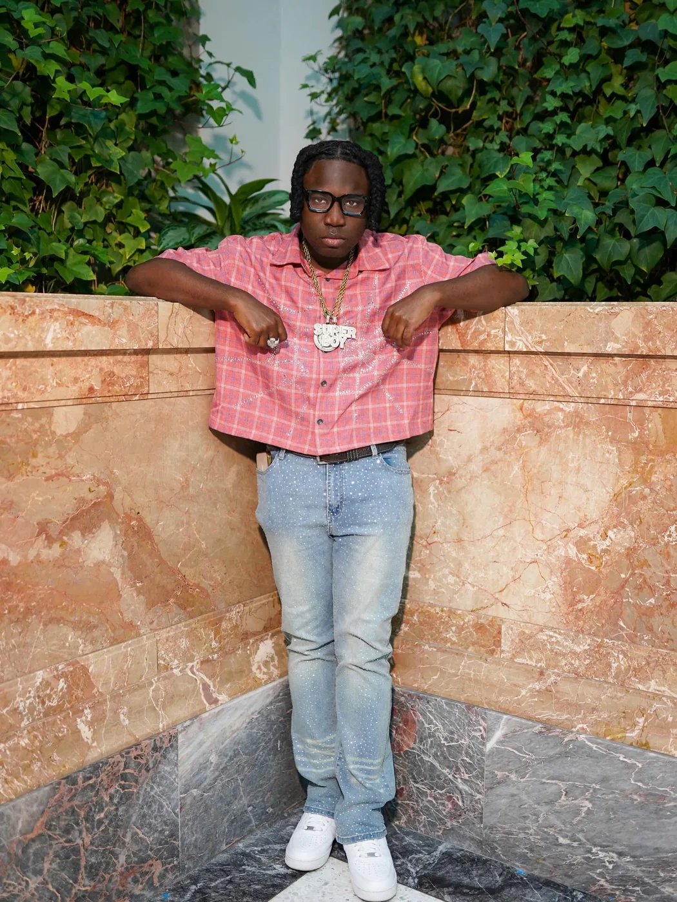

For promoters
Book SupaBoy for performances, hosting, appearances, community events, campus moments, listening parties, and branded live experiences.
The business surface should collect inquiries, tell the story fast, and give promoters/media a clean version of the brand.

SupaBoy is an emerging independent artist with Nigerian roots and a Chicago story, building around Afrobeat energy, emotional records, and nonstop grind.
Book SupaBoy for performances, hosting, appearances, community events, campus moments, listening parties, and branded live experiences.
Use this lane for features, music-video cameos, collaborations, Afrobeat-inspired hooks, and cross-promo campaigns.
Netlify Forms ready. Submissions will appear in the Netlify project Forms tab after deployment.